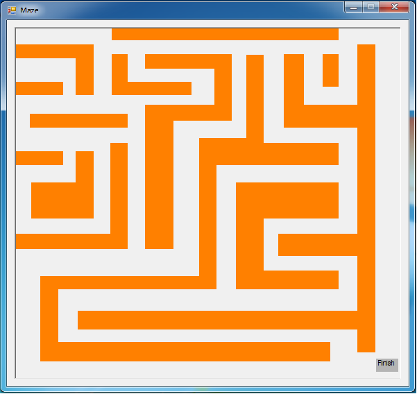

Michael Harner's Website
About Michael Harner
Intented career
I wish to become a Computer software programmer. I am particularly interested in video game design. I would like to some day make my own
video game or be part of the designing process of one.
Work Experience
I have done many volunteer services for my church, and have taken an internship for 3 weeks with AIS (Applied Information Sciences). I got to stay 2 weeks longer than my
internship was intended to last. I also got paid $10 an hour at that job.

The picture of the maze game I made during my internship.
Education
- I was homeschooled in elementary
- I went to Pathway School of Discovery in middle school
- I am currently in Dayton Regional STEM School for my highschool year. I am among it's first students to go there
- I have not gone to college yet
Extra Unimportant Info
- I am a big fan of video games. I mostly like games where I can customize or make something, or where i can make something my own, such
as RPG's and building games like BanjoKazooie: Nuts and Bolts. I do not like sport games or FPS except for certain cases.
- I like to read. I can read books and understand them faster than most other people can. I like good literature, preferably one with some good
laughs. I dont like big drama's. textbooks are fine because they usually contain interesting facts.
- I do not like sports. I am not a big outdoorsy person (unlesss i can swing, in which case, im good). I will not play professional sports unless
there is a grade involved (such as gym class).
- I am very good at summarizing, but it is out of a habit. I hate writing too much, and so will write as little as possible, so I summarize.
What I have learned about Computer Software Design
- It takes determination and patience. Computers are stubborn cranky, ignorant people who only do what they are told. if they dont get told that tiny little detail, then they dont fill it it. They go ahead and run head first into disaster, and then tell the programmer "it didnt work." You have to have patience and determination, or you will give up after the third blowout, if you are lucky.
- Don't code by circumstance. There are people who will code until the program seems to work. they are what I call, "duct tape coders" they basically say stuff like this: "ok, this piece of hardwar seems to be working. Lets ship it." that's like saying: "this evil monster seems to be tamed, let's release it." only disaster follows.
- Learn to stop. There are those who think that the more features you cram into something, the cooler it will be. in a nutshell, they say this: just let me add (insert random pointless feature that no one will ever use here), and then it will be done. for real this time." Features are the most expensive part of any product. They take thought and time. Also, some people will rather have the stupid product now than wait for 100 years before getting the big cool shiny version. I know the temptation is great, but use your common sense. Otherwise, you will never release it.
- There is no "right way" to everything. There are thousands of tools, each with it's own strenghts, but they all have shortcomings. no one is right for everyone. There is a right way for one person, but that's it. Some people don't like to have religion shoved down their throat. isn't telling them that your software is better than their's and making them switch the same?
- You just can't have perfect. No, seriously, you can't. Until Jesus comes back to earth, there will be no perfect human on earth, or in space. the same is true of everything else, including software. if you want to make perfect software, your no better than the people who keep adding features.
- Don't ruin your code. This isn't as obvious, but there is a way to just start destroying it. Do you know what causes a building to become a crumbling shell? a broken window. One broken window will give off the impression that the owners don't care about the building, so people start ruining it. Eventually, everyone thinks, "this building is trash, I might as well follow suit." the same thing goes with code. you must keep your code functioning. If you wreck a small portion, and then get upset, you then let it get destroyed. keep your code in tip top shape. that's all it takes.
- Ask for help. I know some of you think that I'm crazy here, but I'm not. think it's a typo? I'll say it again. ASK FOR HELP! What makes this difficult is that so many of us decide that it's better to not do a single thing than look like a moron. But unless you want to join our current unemployment rate, the I suggest that, if you're stuck and don't know what to do, the suck up your pride and go ask someone else. If they won't help you, then ask some one else. if NO ONE will help, then you can go online. atleast you're ego will be intact. if that won't work, then go find a new profession.
- Have a back-up. I know it can be troublesome, but if something goes wrong, then you just go to the last copy of the back up and go from there. if you don't, then you have to go and type the WHOLE THING OVER AGAIN. which sounds easier, making a copy on, lets say cloud, or github, or retyping the whole program from ground one? You can figure it out.
- Have fun. If you enjoy it, it won't seem as hard. Unlike the other things, this is he easiest item on the list. simplicity itself.
Last updated: 8/3/2012